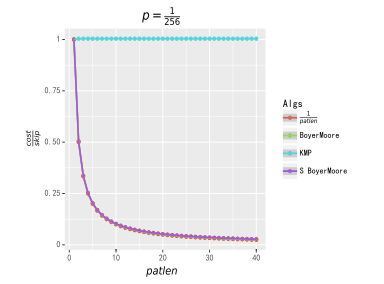
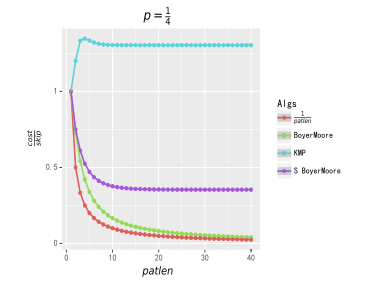

OI Wiki · prijevod · StringoviOI Wiki · translation · Strings
Boyer–Mooreov algoritamBoyer–Moore algorithm
Sadržaj
Predznanje: Prefiksna funkcija i KMP algoritam.
KMP algoritam do krajnjih granica iskorištava informacije o podudaranju prefiksa,
dok je osnovna ideja BM algoritma da podudaranjem sufiksa dobije više informacija nego podudaranjem prefiksa i time postigne brže skokove po znakovima.
Uvod
Zamislimo da je naš uzorak \(pat\) postavljen na lijevi početak teksta \(string\), tako da su im prvi znakovi poravnati.
Ovdje uvodimo definicije koje dalje nećemo ponavljati:
duljina \(pat\) je \(patlen\); posebno, za stringove indeksirane od 0 definiramo \(patlastpos=patlen-1\) kao poziciju posljednjeg znaka u \(pat\);
duljina \(string\) je \(stringlen\), \(stringlastpos = stringlen-1\).
Pretpostavimo da znamo \(patlen\)-ti znak \(char\) teksta \(string\) (poravnat s posljednjim znakom \(pat\)). Razmotrimo koje informacije iz toga možemo dobiti:
Opažanje 1
Ako znamo da se znak \(char\) ne pojavljuje u \(pat\), ne trebamo razmatrati pojavljivanja \(pat\) koja počinju na \(1.\), \(2.\), …, \(patlen\)-tom znaku teksta \(string\), nego \(pat\) možemo izravno pomaknuti za \(patlen\) znakova.
Opažanje 2
Općenitije, ako je pozicija posljednjeg (tj. najdesnijeg) pojavljivanja znaka \(char\) u \(pat\) udaljena \(delta_1\) znakova od kraja,
onda bez podudaranja možemo \(pat\) izravno pomaknuti za \(delta_1\) znakova: ako bi pomak bio manji od \(delta_1\), već se sam znak \(char\) ne bi mogao podudariti, pa se ne bi podudario ni uzorak \(pat\).
Dakle, osim ako se znak \(char\) podudara s posljednjim znakom \(pat\), u \(string\) treba preskočiti \(delta_1\) znakova (što odgovara pomaku \(pat\) za \(delta_1\) znakova). Tako dobivamo funkciju \(delta_1(char)\) za računanje \(delta_1\):
Uočimo da ovu tablicu očito treba izračunati samo do pozicije \(patlastpos-1\).
Pretpostavimo sada da se \(char\) podudario s posljednjim znakom \(pat\); tada provjeravamo podudara li se znak ispred \(char\) s pretposljednjim znakom \(pat\):
ako da, nastavljamo unatrag dok se cijeli uzorak \(pat\) ne podudari (tada smo u \(string\) uspješno pronašli pojavljivanje \(pat\));
ili se može dogoditi da se, nakon što smo podudarili posljednjih \(m\) znakova \(pat\), na \((m+1)\)-om znaku od kraja dogodi nepodudaranje. Tada želimo \(pat\) pomaknuti na sljedeću poziciju na kojoj bi se podudaranje moglo ostvariti, i naravno želimo pomak što veći.
Opažanje 3(a)
U Opažanju 2 rečeno je da, kad se nakon podudaranja posljednjih \(m\) znakova \(pat\) dogodi nepodudaranje na \((m+1)\)-om znaku od kraja, da bi se nepodudareni znak u \(string\) poravnao s odgovarajućim znakom u \(pat\),
treba \(pat\) pomaknuti za \(k\) znakova, tj. pozornost trebamo usmjeriti na znak \(k+m\) mjesta dalje (tj. na znak u \(string\) koji je nakon pomaka \(pat\) za k poravnat s krajem \(pat\)).
A \(k=delta_1-m\),
pa pozornost duž \(string\) trebamo pomaknuti za \(delta_1-m+m = delta_1\) znakova.
No imamo priliku preskočiti još više znakova; čitajte dalje.
Opažanje 3(b)
Ako znamo da se sljedećih \(m\) znakova \(string\) podudara s posljednjih \(m\) znakova \(pat\), nazovimo taj podstring \(subpat\).
Znamo i da se iza nepodudarenog znaka \(char\) u \(string\) nalazi podstring koji se podudara sa \(subpat\); ako u \(pat\) ispred znaka koji odgovara nepodudarenom znaku postoji \(subpat\), možemo \(pat\) pomaknuti za određenu udaljenost,
tako da se \(subpat\) koji se u \(pat\) pojavljuje ispred znaka koji odgovara nepodudarenom znaku \(char\) (plausible reoccurrence – „vjerodostojno ponovno pojavljivanje”, u nastavku skraćeno pr) poravna sa \(subpat\) u \(string\). Ako u \(pat\) ima više \(subpat\), prema redoslijedu sufiksnog podudaranja zdesna nalijevo uzimamo prvi (rightmost plausible reoccurrence, u nastavku skraćeno rpr).
Pretpostavimo da se \(pat\) pritom pomiče za \(k\) znakova (tj. udaljenost između \(subpat\) na kraju \(pat\) i njegova najdesnijeg vjerodostojnog ponovnog pojavljivanja); tada pozornost duž \(string\) trebamo pomaknuti za \(k+m\) znakova. Tu udaljenost zovemo \(delta_2(j)\):
Neka je \(rpr(j)\) pozicija najdesnijeg vjerodostojnog ponovnog pojavljivanja \(subpat=pat[j+1\dots patlastpos]\) pri nepodudaranju na \(pat[j]\), \(rpr(j) < j\) (ovdje dajemo samo jednostavnu definiciju; preciznija rasprava slijedi u odjeljku o dizajnu algoritma). Tada je očito \(k=j-rpr(j),\ m=patlastpos-j\).
Stoga imamo:
Dakle, pri nepodudaranju pozornost na \(string\) možemo pomaknuti za \(\max(delta_1,delta_2)\) znakova.
Postupak
Strelica pokazuje na nepodudareni znak \(char\):
\(\texttt{F}\) se ne pojavljuje u \(pat\), pa prema Opažanju 1 \(pat\) izravno pomičemo za \(patlen\) znakova, tj. 7 znakova:
Prema Opažanju 2 \(pat\) trebamo pomaknuti za 4 znaka da bi se crtice poravnale:
Sada se char:\(\texttt{T}\) podudario; pokazivač na \(string\) pomičemo za jedan korak ulijevo i nastavljamo podudaranje:
Prema Opažanju 3(a) \(\texttt{L}\) se ne podudara; budući da \(\texttt{L}\) nije u \(pat\), \(pat\) pomičemo za \(k=delta_1-m=7-1=6\) znakova, a pokazivač na \(string\) za \(delta_1=7\) znakova:
Sada se \(char\) opet podudario s posljednjim znakom \(pat\), \(\texttt{T}\); pokazivač na \(string\) ide ulijevo, podudara \(\texttt{A}\), nastavlja ulijevo i otkriva nepodudaranje na znaku \(\texttt{-}\):
Intuitivno je očito da, prema Opažanju 3(b), \(pat\) pomičemo za \(k=5\) znakova tako da se sufiks \(\texttt{AT}\) poravna; taj pomak daje najveći pomak pokazivača na \(string\), pri čemu je \(delta_2=k+patlastpos-j=5+6-4=7\), tj. pokazivač na \(string\) pomičemo za 7 znakova.
Formalno gledano, ovdje je \(delta_1=7-1-2=4,\ delta_2=7, \max(delta_1,delta_2)= 7\), što formalno potvrđuje skok iz Opažanja 3(b):
Sada vidimo da je svaki znak \(pat\) jednak odgovarajućem znaku \(string\): pronašli smo pojavljivanje \(pat\) u \(string\). Pritom smo potrošili samo 14 pristupa \(string\), od kojih je 7 nužnih usporedbi za uspješno podudaranje (\(patlen=7\)), a ostalih 7 omogućilo nam je preskakanje 22 znaka.
Dizajn algoritma
Izvorni algoritam podudaranja
Objašnjenje
Promotrimo sljedeći algoritam podudaranja stringova koji koristi \(delta_1\) i \(delta_2\):
Ako gornji algoritam vrati \(\textbf{return}\ false\), \(pat\) nije u \(string\); ako vrati broj, to je pozicija prvog pojavljivanja \(pat\) u \(string\) slijeva.
Opišimo sada preciznije funkciju \(rpr(j)\) na koju se oslanja računanje \(delta_2\).
Prema ranijoj definiciji, \(rpr(j)\) je pozicija najdesnijeg vjerodostojnog ponovnog pojavljivanja podstringa \(subpat=pat[j+1\dots patlastpos]\) kad se nepodudaranje dogodi na \(pat[j]\).
Drugim riječima, treba pronaći najbolji \(k\) takav da je \(pat[k\dots k+patlastpos-j-1]=pat[j+1\dots patlastpos]\), uz dva posebna slučaja:
- Kad je \(k<0\), to odgovara dodavanju virtualnog prefiksa ispred \(pat\), što je zapravo u skladu s načelom skoka \(delta_2\).
- Kad je \(k>0\), ako je \(pat[k-1]=pat[j]\), tada \(pat[k\dots k+patlastpos-j-1]\) ne može biti vjerodostojno ponovno pojavljivanje \(subpat\). Razlog je što je \(pat[j]\) sam nepodudareni znak, pa bi se nakon pomaka \(pat\) za \(k\) znakova pri sufiksnom podudaranju opet dogodilo nepodudaranje na \(pat[k-1]\).
Treba paziti i na dva ograničenja:
- \(k < j\). Jer kad je \(k=j\), vrijedi \(pat[k]=pat[j]\), pa bi se znak koji se ne podudara na \(pat[j]\) ne bi podudario ni na \(pat[k]\).
- Budući da je \(delta_2(patlastpos)= 0\), definiramo \(rpr(patlastpos) = patlastpos\).
Postupak
Budući da je razumijevanje \(rpr(j)\) srž implementacije Boyer–Mooreova algoritma, detaljno ga objašnjavamo na sljedeća dva primjera:
Za \(rpr(0)\), \(subpat\) je \(\texttt{BCXXXABC}\); najdesnije vjerodostojno ponovno pojavljivanje ispred \(pat[0]\) može biti samo \(\texttt{[(BCXXX)ABC]XXXABC}\), tj. pozicija najdesnijeg vjerodostojnog ponovnog pojavljivanja je -5, dakle \(rpr(j)=-5\);
za \(rpr(1)\), \(subpat\) je \(\texttt{CXXXABC}\); najdesnije vjerodostojno ponovno pojavljivanje ispred \(pat[1]\) je \(\texttt{[(CXXX)ABC]XXXABC}\), pa je \(rpr(j)=-4\);
za \(rpr(2)\), \(subpat\) je \(\texttt{XXXABC}\); najdesnije vjerodostojno ponovno pojavljivanje ispred \(pat[2]\) je \(\texttt{[(XXX)ABC]XXXABC}\), pa je \(rpr(j)=-3\);
za \(rpr(3)\), \(subpat\) je \(\texttt{XXABC}\); najdesnije vjerodostojno ponovno pojavljivanje ispred \(pat[3]\) je \(\texttt{[(XX)ABC]XXXABC}\), pa je \(rpr(j)=-2\);
za \(rpr(4)\), \(subpat\) je \(\texttt{XABC}\); najdesnije vjerodostojno ponovno pojavljivanje ispred \(pat[4]\) je \(\texttt{[(X)ABC]XXXABC}\), pa je \(rpr(j)=-1\);
za \(rpr(5)\), \(subpat\) je \(\texttt{ABC}\); najdesnije vjerodostojno ponovno pojavljivanje ispred \(pat[5]\) je \(\texttt{[ABC]XXXABC}\), pa je \(rpr(j)=0\);
za \(rpr(6)\), \(subpat\) je \(\texttt{BC}\); budući da je \(string[0]=string[6]\), tj. \(string[0]\) jednak je nepodudarenom znaku \(string[6]\), \(string[0\dots 2]\) nije valjano vjerodostojno ponovno pojavljivanje \(subpat\), pa je najdesnije vjerodostojno ponovno pojavljivanje \(\texttt{[(BC)]ABCXXXABC}\), dakle \(rpr(j)=-2\);
za \(rpr(7)\), \(subpat\) je \(\texttt{C}\); slično, budući da je \(string[7]=string[1]\), \(string[1\dots 2]\) nije valjano vjerodostojno ponovno pojavljivanje \(subpat\), pa je najdesnije vjerodostojno ponovno pojavljivanje \(\texttt{[(C)]ABCXXXABC}\), dakle \(rpr(j)=-1\);
za \(rpr(8)\), prema definiciji \(delta_2\), \(rpr(patlastpos)=patlastpos\), pa je \(rpr(8)=8\).
Pogledajmo sada još jedan primjer:
Za \(rpr(0)\), \(subpat\) je \(\texttt{BYXCDEYX}\); najdesnije vjerodostojno ponovno pojavljivanje ispred \(pat[0]\) može biti samo \(\texttt{[(BYXCDEYX)]ABYXCDEYX}\), tj. pozicija najdesnijeg vjerodostojnog ponovnog pojavljivanja je -8, dakle \(rpr(j)=-8\);
za \(rpr(1)\), \(subpat\) je \(\texttt{YXCDEYX}\); najdesnije vjerodostojno ponovno pojavljivanje ispred \(pat[1]\) može biti samo \(\texttt{[(YXCDEYX)]ABYXCDEYX}\), \(rpr(j)=-7\);
za \(rpr(2)\), \(subpat\) je \(\texttt{XCDEYX}\); najdesnije vjerodostojno ponovno pojavljivanje ispred \(pat[2]\) može biti samo \(\texttt{[(XCDEYX)]ABYXCDEYX}\), \(rpr(j)=-6\);
za \(rpr(3)\), \(subpat\) je \(\texttt{CDEYX}\); najdesnije vjerodostojno ponovno pojavljivanje ispred \(pat[3]\) može biti samo \(\texttt{[(CDEYX)]ABYXCDEYX}\), \(rpr(j)=-5\);
za \(rpr(4)\), \(subpat\) je \(\texttt{DEYX}\); najdesnije vjerodostojno ponovno pojavljivanje ispred \(pat[4]\) može biti samo \(\texttt{[(DEYX)]ABYXCDEYX}\), \(rpr(j)=-4\);
za \(rpr(5)\), \(subpat\) je \(\texttt{EYX}\); najdesnije vjerodostojno ponovno pojavljivanje ispred \(pat[5]\) može biti samo \(\texttt{[(EYX)]ABYXCDEYX}\), \(rpr(j)=-3\);
za \(rpr(6)\), \(subpat\) je \(\texttt{YX}\); budući da je \(string[2\dots 3]=string[7\dots 8]\) i \(string[6]\neq string[1]\), najdesnije vjerodostojno ponovno pojavljivanje ispred \(pat[6]\) je \(\texttt{AB[YX]CDEYX}\), \(rpr(j)=2\);
za \(rpr(7)\), \(subpat\) je \(\texttt{X}\); iako je \(string[3]=string[8]\), budući da je \(string[2] = string[7]\), najdesnije vjerodostojno ponovno pojavljivanje ispred \(pat[7]\) je \(\texttt{[X]ABYXCDEYX}\), \(rpr(j)=-1\);
za \(rpr(8)\), prema definiciji \(delta_2\), \(rpr(patlastpos)=patlastpos\), pa je \(rpr(8)=8\).
Poboljšanje algoritma podudaranja
Naposljetku, u praksi se procjenjuje da se oko 80 % vremena pretraživanja troši na skokove iz Opažanja 1, tj. na slučaj kad se \(string[i]\) i \(pat[patlastpos]\) ne podudaraju i zatim preskačemo cijeli \(patlen\) do sljedećeg podudaranja.
Stoga za to možemo napraviti posebnu optimizaciju:
definiramo \(delta0\):
Zamjenom \(delta_1\) s \(delta0\) dobivamo poboljšani algoritam podudaranja:
Pritom \(large\) ima više uloga: prvo, omogućuje brze skokove po lošem znaku slično Horspoolovu algoritmu opisanom dalje; drugo, pomaže pri provjeri je li pretraživanje stringa završeno.
Nakon poboljšanja, u odnosu na izvorni algoritam, pri skokovima iz Opažanja 1 više ne treba svaki put suvišno računati \(delta_2\), čime se performanse pretraživanja nad uobičajenim abecedama znatno poboljšavaju.
Detalji izgradnje delta2
Uvod
U listopadu 1977. u Communications of the ACM Boyer i Moore u svom radu1 opisali su samo statičku tablicu \(delta_2\),
a rasprava o konkretnoj implementaciji izgradnje \(delta_2\) pojavila se u lipnju 1977. u radu o KMP algoritmu2 koji su Knuth, Morris i Pratt zajednički objavili u SIAM Journal on Computing.
Naivni algoritam
Prije opisa Knuthova algoritma za izgradnju \(delta_2\), prema definiciji imamo naivni algoritam prikladan za male probleme:
- Za svaku poziciju
iu intervalu[0, patlen), prema duljinisubpatodredimo interval mogućih pozicija ponovnog pojavljivanja, tj.[-subpatlen, i]; - moguće pozicije ponovnog pojavljivanja uspoređujemo znak po znak zdesna nalijevo i tražimo najdesniju poziciju ponovnog pojavljivanja \(subpat\) koja zadovoljava zahtjeve \(delta_2\);
- na kraju ne zaboravimo postaviti \(delta_2(lastpos)= 0\).
Implementacija
use std::cmp::PartialEq;
pub fn build_delta_2_table_naive(p: &[impl PartialEq]) -> Vec<usize> {
let patlen = p.len();
let lastpos = patlen - 1;
let mut delta_2 = vec![];
for i in 0..patlen {
let subpatlen = (lastpos - i) as isize;
if subpatlen == 0 {
delta_2.push(0);
break;
}
for j in (-subpatlen..(i + 1) as isize).rev() {
// podudaranje subpat
if (j..j + subpatlen)
.zip(i + 1..patlen)
.all(|(rpr_index, subpat_index)| {
if rpr_index < 0 {
return true;
}
if p[rpr_index as usize] == p[subpat_index] {
return true;
}
false
})
&& (j <= 0 || p[(j - 1) as usize] != p[i])
{
delta_2.push((lastpos as isize - j) as usize);
break;
}
}
}
delta_2
}
Posebno, dajemo nužna objašnjenja značajki jezika Rust, koja dalje nećemo ponavljati:
usizeiisizesu neoznačeni i označeni cijeli brojevi iste širine kao memorijski pokazivač; na 32-bitnim strojevima odgovarajuu32ii32, a na 64-bitnimu64ii64.- Pri indeksiranju polja, vektora i odsječaka koriste se brojevi tipa
usize(jer se radi o nasumičnom pristupu memoriji i indeks ne može biti negativan); stoga, ako treba raditi s negativnim vrijednostima, koristi seisize, a pri indeksiranju opetusize, pa se ključnom riječjuasvrši eksplicitna pretvorba među njima. impl PartialEqsluži samo kao generički tip koji istodobno podržavacharu kodiranjuUnicodei binarniu8.
Očito je vremenska složenost ovog naivnog algoritma \(O(n^3)\).
Učinkoviti algoritam
U nastavku opisujemo učinkoviti algoritam vremenske složenosti \(O(n)\), koji međutim zahtijeva dodatnih \(O(n)\) prostora.
Iako je Knuth 1977. predložio ovu metodu izgradnje, njegova izvorna verzija ima nedostatak: za neke \(pat\) zapravo ne daje \(delta_2\) u skladu s definicijom.
Rytter je 1980. u članku3 u SIAM Journal on Computing predložio ispravak; slijedi algoritam izgradnje \(delta_2\):
Najprije, budući da je definicija \(delta_2\) razmjerno složena, klasificiramo slučajeve prema poziciji ponovnog pojavljivanja \(subpat\) i svaku klasu obrađujemo zasebno; to je ključna ideja učinkovite implementacije.
Prema poziciji ponovnog pojavljivanja od najdalje do najbliže, tj. prema pomaku od najvećeg do najmanjeg, razlikujemo sljedeće klase:
-
Cijelo ponovno pojavljivanje \(subpat\) nalazi se potpuno lijevo od \(pat\), npr. \(\texttt{[(EYX)]ABYXCDEYX}\); tada je \(delta_2(j) = patlastpos\times 2 - j\);
-
ponovno pojavljivanje \(subpat\) dijelom je lijevo od \(pat\), a dijelom je početak \(pat\), npr. \(\texttt{[(XX)ABC]XXXABC}\); tada je \(patlastpos < delta_2(j) < patlastpos\times 2 - j\); ovamo ubrajamo i rubni slučaj kad je \(subpat\) u cijelosti početak \(pat\) (ovisno o implementaciji može se svrstati i u sljedeću klasu), npr. \(\texttt{[ABC]XXXABC}\); tada je \(patlastpos = delta_2(j)\);
-
ponovno pojavljivanje \(subpat\) u cijelosti je unutar \(pat\), npr. \(\texttt{AB[YX]CDEYX}\); tada je \(delta_2(j) < patlastpos\).
Razmotrimo sada kako učinkovito izračunati ova tri slučaja:
Prvi slučaj
To je najjednostavniji slučaj: dovoljan je jedan prolaz, kojim usput možemo inicijalizirati \(delta_2\).
Drugi slučaj
Promotrimo kada se događa da je ponovno pojavljivanje \(subpat\) dijelom lijevo od \(pat\), a dijelom početak \(pat\). To je kad je neki sufiks \(subpat\) jednak nekom prefiksu \(pat\),
npr. u ranijem primjeru:
ponovno pojavljivanje za \(delta_2(3)\) je \(\texttt{[(XX)ABC]XXXABC}\); među sufiksima \(subpat\) \(\texttt{XXABC}\) i prefiksima pat postoji jednak par, \(\texttt{ABC}\).
Zapravo je za računanje drugog i trećeg slučaja ključno računanje i primjena prefiksne funkcije.
Dakle, kad god \(j\) poprimi vrijednost takvu da \(subpat\) sadrži taj jednaki sufiks, dobivamo ponovno pojavljivanje \(subpat\) drugog slučaja; u primjeru treba samo \(j \leqslant 5\),
a kad je \(j = 5\), imamo rubni slučaj u kojem je \(subpat\) u cijelosti početak \(pat\).
Izračunajmo tada \(delta_2(j)\):
neka je duljina tog para jednakih prefiksa i sufiksa \(\textit{prefixlen}\); znamo \(subpatlen = patlastpos - j\), pa je duljina dijela lijevo od \(pat\) jednaka \(subpatlen-\textit{prefixlen}\),
a \(rpr(j) = -(subpatlen-\textit{prefixlen})\), pa dobivamo \(delta_2(j) = patlastpos - rpr(j) = patlastpos \times 2 - j - \textit{prefixlen}\).
Nakon toga može postojati više parova jednakih prefiksa i sufiksa, npr.:
Za \(j\leq2\) imamo \(\texttt{ABAABAA}\), za \(2< j \leq 5\) imamo \(\texttt{ABAA}\), a za \(5<j\leq8\) imamo \(\texttt{A}\).
Nedostatak Knuthova algoritma jest što razmatra samo najdulji par, a zapravo treba razmotriti sve slučajeve u kojima je sufiks \(subpat\) jednak prefiksu \(pat\), što je ekvivalentno računanju svih jednakih pravih sufiksa i pravih prefiksa \(pat\) te, po duljini od najveće do najmanje, računanju različitih \(delta_2(j)\) po intervalima \(j\).
Pomoću prefiksne funkcije i obrnute primjene jednadžbe prijelaza stanja za računanje prefiksne funkcije, \(j^{(n)} = \pi[j^{(n-1)}-1]\), dobivamo duljine svih jednakih pravih prefiksa i pravih sufiksa \(pat\). Krećemo od \(\pi[patlastpos]\) kao duljine najduljeg para, a zatim obrnutom primjenom jednadžbe prijelaza stanja dobivamo duljinu sljedećeg najduljeg para jednakih pravih prefiksa i sufiksa.
Time je računanje \(delta_2\) za drugi slučaj dovršeno.
Treći slučaj
Ponovno pojavljivanje \(subpat\) nalazi se upravo unutar \(pat\) (ne uključujući početak \(pat\)), tj. tražimo \(subpat\) u \(pat[0\dots patlastpos-1]\) zdesna nalijevo.
Ako to rješavamo BM algoritmom, dobivamo rekurzivnu BM implementaciju trećeg slučaja, s uvjetom zaustavljanja \(patlen \leqslant 2\).
Osim toga, prema definiciji \(delta_2\), sljedeći (tj. lijevi) znak pronađenog ponovnog pojavljivanja \(subpat\) ne smije biti jednak sljedećem znaku \(subpat\) koji je sufiks \(pat\).
To nas lijepo navodi na to da treći slučaj možemo izračunati postupkom sličnim računanju prefiksne funkcije, samo s prefiksnom funkcijom u kojoj su lijevo i desno zamijenjeni:
- dva pokazivača pokazuju redom na lijevi kraj podstringa i na poziciju „prefiksa” najduljeg zajedničkog prefiksa-sufiksa podstringa; pomiču se zdesna nalijevo, a kad su znakovi na koje pokazuju jednaki, nastavljaju se pomicati, što odgovara povećanju „prefiksa”;
- kad dva znaka nisu jednaka, prethodno jednaki dio zadovoljava zahtjev \(delta_2\) za ponovno pojavljivanje, a pokazivač na poziciju „prefiksa” vraćamo unatrag dok se ne uspostavi nova jednakost znakova ili dok ne izađe izvan granica.
Kao i kod prefiksne funkcije, potrebno je pomoćno polje za vraćanje unatrag; može se iskoristiti prostor prefiksnog polja generiranog pri računanju drugog slučaja.
Implementacija
Implementacija gore opisanog
use std::cmp::PartialEq;
use std::cmp::min;
pub fn build_delta_2_table_improved_minghu6(p: &[impl PartialEq]) -> Vec<usize> {
let patlen = p.len();
let lastpos = patlen - 1;
let mut delta_2 = Vec::with_capacity(patlen);
// prvi slučaj
// delta_2[j] = lastpos * 2 - j
for i in 0..patlen {
delta_2.push(lastpos * 2 - i);
}
// drugi slučaj
// lastpos <= delata2[j] = lastpos * 2 - j
let pi = compute_pi(p); // računanje prefiksne funkcije
let mut i = lastpos;
let mut last_i = lastpos; // samo radi inicijalizacije
while pi[i] > 0 {
let start;
let end;
if i == lastpos {
start = 0;
} else {
start = patlen - pi[last_i];
}
end = patlen - pi[i];
for j in start..end {
delta_2[j] = lastpos * 2 - j - pi[i];
}
last_i = i;
i = pi[i] - 1;
}
// treći slučaj
// delata2[j] < lastpos
let mut j = lastpos;
let mut t = patlen;
let mut f = pi;
loop {
f[j] = t;
while t < patlen && p[j] != p[t] {
// funkcijom min osiguravamo da kasnije moguće vraćanje unatrag ne prepiše ranije podatke
delta_2[t] = min(delta_2[t], lastpos - 1 - j);
t = f[t];
}
t -= 1;
if j == 0 {
break;
}
j -= 1;
}
// nema stvarnog značenja, samo radi potpune definicije
delta_2[lastpos] = 0;
delta_2
}
Galilovo pravilo i poboljšanje najgoreg slučaja pri višestrukom podudaranju
Problem višestrukog podudaranja kod algoritama sufiksnog podudaranja
Prethodni algoritam pretraživanja odnosi se samo na pronalaženje prvog pojavljivanja \(pat\) u \(string\), dok za pronalaženje svih pojavljivanja \(pat\) u \(string\) postoji mnogo različitih algoritamskih pristupa. Središnje je pitanje ovog problema: kako iskoristiti informacije o prethodno uspješno podudarenim znakovima da bi se vremenska složenost u najgorem slučaju svela na linearnu.
Ako nakon uspješnog podudaranja jednostavno pomaknemo pokazivač na \(string\) za \(patlen\) i ponovno započnemo sufiksno podudaranje, u najgorem se slučaju vraćamo na složenost \(O(mn)\) (prema uobičajenoj konvenciji \(m\) je \(patlen\), a \(n\) je \(stringlen\); isto vrijedi dalje).
Na primjer, ekstreman slučaj: \(pat\): \(\texttt{AAA}\), \(string\): \(\texttt{AAAAA}\dots\).
Knuth je za to predložio metodu koja „konačnim” skupom stanja bilježi znakove duljine \(patlen\); taj algoritam jamči da se svaki znak u \(string\) uspoređuje najviše jednom, ali po cijenu toga da taj „konačni” skup stanja može biti prilično velik: za \(pat\) čiji su znakovi međusobno različiti potrebno je \(\dfrac{1}{2}m^{2}+m\) stanja.
U nastavku opisujemo jednostavan pristup koji ne zahtijeva dodatnu pretprocesiranje — Galilov algoritam4.
Galilovo pravilo
Pretpostavimo da je \(pat\) prefiks stringa \(UUUU\dots\) nastalog ponavljanjem nekog podstringa \(U\) n puta; tada \(U\) zovemo periodom od \(pat\).
Na primjer, \(pat: \texttt{ABCABCAB}\) prefiks je ponavljanja \(\texttt{ABCABCABC}\) stringa \(\texttt{ABC}\), pa je duljina \(\texttt{ABC}\), \(3\), duljina perioda ovog \(pat\), tj. \(pat\) zadovoljava \(pat[i] = pat[i+3]\).
\(pat\) ima barem jedan period duljine jednake vlastitoj duljini; najkraći period označimo s \(k\), \(k\leq patlen\).
Ako tijekom pretraživanja naš \(pat\) uspješno dovrši jedno podudaranje, onda prema svojstvima perioda zapravo trebamo pomaknuti \(string\) samo za \(k\) znakova i usporediti jesu li tih \(k\) znakova redom jednaki da bismo izravno utvrdili postoji li još jedno pojavljivanje \(pat\).
Za računanje duljine najkraćeg perioda pretpostavimo da znamo par jednakih prefiks-sufiks od \(pat\) duljine \(\textit{prefixlen}\); tada vrijedi \(pat[i] = pat[i+(patlen-\textit{prefixlen})]\). Time dobivamo period duljine \(patlen-\textit{prefixlen}\),
a kad znamo najdulji par jednakih prefiks-sufiks od \(pat\), dobivamo najkraći period od \(pat\).
Duljinu najduljeg jednakog prefiksa-sufiksa, \(\pi[patlastpos]\), već imamo iz postupka računanja \(delta_2\), pa zapravo bez dodatnog vremena i prostora pretprocesiranja vremensku složenost algoritma sufiksnog podudaranja u najgorem slučaju možemo poboljšati na linearnu.
Konačna implementacija BM algoritma pretraživanja s gornjim optimizacijama
#[cfg(target_pointer_width = "64")]
const LARGE: usize = 10_000_000_000_000_000_000;
#[cfg(not(target_pointer_width = "64"))]
const LARGE: usize = 2_000_000_000;
pub struct BMPattern<'a> {
pat_bytes: &'a [u8],
delta_1: [usize; 256],
delta_2: Vec<usize>,
k: usize // duljina najkraćeg perioda pat
}
impl<'a> BMPattern<'a> {
// ...
pub fn find_all(&self, string: &str) -> Vec<usize> {
let mut result = vec![];
let string_bytes = string.as_bytes();
let stringlen = string_bytes.len();
let patlen = self.pat_bytes.len();
let pat_last_pos = patlen - 1;
let mut string_index = pat_last_pos;
let mut pat_index;
let l0 = patlen - self.k;
let mut l = 0;
while string_index < stringlen {
let old_string_index = string_index;
while string_index < stringlen {
string_index += self.delta0(string_bytes[string_index]);
}
if string_index < LARGE {
break;
}
string_index -= LARGE;
// Ako se string_index pomaknuo, od posljednjeg uspješnog podudaranja dogodilo se barem jedno neuspješno podudaranje.
// Tada pomak ponovnog podudaranja po Galilovu pravilu treba vratiti na nulu.
if old_string_index < string_index {
l = 0;
}
pat_index = pat_last_pos;
while pat_index > l && string_bytes[string_index] == self.pat_bytes[pat_index] {
string_index -= 1;
pat_index -= 1;
}
if pat_index == l && string_bytes[string_index] == self.pat_bytes[pat_index] {
result.push(string_index - l);
string_index += pat_last_pos - l + self.k;
l = l0;
} else {
l = 0;
string_index += max(
self.delta_1[string_bytes[string_index] as usize],
self.delta_2[pat_index],
);
}
}
result
}
}
Utjecaj najgoreg slučaja na performanse u praksi
S praktičnog stajališta, teorijski najgori slučaj ne utječe lako na performanse; čak i na testovima s nasumičnim tekstom nad vrlo malom abecedom od samo 4 znaka utjecaj tog najgoreg slučaja premalen je da bi se primijetio.
Zato, ako nije dobro dizajnirano, Galilovo pravilo može malo usporiti prosječne performanse, ali za neke ekstremno posebne \(pat\) i \(string\), poput primjera \(pat\): \(\texttt{AAA}\), \(string\): \(\texttt{AAAAA}\dots\), primjena Galilova pravila doista poboljšava performanse višestruko.
Poboljšani algoritmi
Simplified Boyer–Moore algoritam
Najsloženiji dio BM algoritma izgradnja je tablice \(delta_2\) (tj. tablice dobrog sufiksa), a u praksi se pokazalo da performanse podudaranja nad uobičajenim abecedama uglavnom ovise o tablici \(delta_1\) (tj. tablici lošeg znaka). Tako je nastala pojednostavnjena verzija BM algoritma koja koristi samo tablicu \(delta_1\), a čije se performanse obično vrlo malo razlikuju od izvorne.
Boyer–Moore–Horspol algoritam
Horspolov algoritam također se temelji na pravilu lošeg znaka: primjenjuje \(delta_1\) na znak poravnat s krajem \(pat\). Učinak je sličan poboljšanju izvornog algoritma podudaranja, a performanse su obično bolje od izvorne verzije.
Implementacija
pub struct HorspoolPattern<'a> {
pat_bytes: &'a [u8],
bm_bc: [usize; 256],
}
impl<'a> HorspoolPattern<'a> {
// ...
pub fn find_all(&self, string: &str) -> Vec<usize> {
let mut result = vec![];
let string_bytes = string.as_bytes();
let stringlen = string_bytes.len();
let pat_last_pos = self.pat_bytes.len() - 1;
let mut string_index = pat_last_pos;
while string_index < stringlen {
if &string_bytes[string_index-pat_last_pos..string_index+1] == self.pat_bytes {
result.push(string_index-pat_last_pos);
}
string_index += self.bm_bc[string_bytes[string_index] as usize];
}
result
}
}
Boyer–Moore–Sunday algoritam
Sundayev algoritam također koristi pravilo lošeg znaka, samo što u odnosu na Horspool ide korak dalje: izravno promatra znak koji slijedi iza znaka poravnatog s krajem \(pat\).
Za implementaciju je dovoljno malo izmijeniti tablicu \(delta_1\), što odgovara izgradnji nad \(pat\) duljine \(patlen+1\).
Sundayev algoritam obično se smatra jednim od praktičnih algoritama koji su u općem slučaju najjednostavniji za implementaciju i s najboljim prosječnim performansama; obično je nešto brži od Horspoola i BM-a.
Implementacija
pub struct SundayPattern<'a> {
pat_bytes: &'a [u8],
sunday_bc: [usize; 256],
}
impl<'a> SundayPattern<'a> {
// ...
fn build_sunday_bc(p: &'a [u8]) -> [usize; 256] {
let mut sunday_bc_table = [p.len() + 1; 256];
for i in 0..p.len() {
sunday_bc_table[p[i] as usize] = p.len() - i;
}
sunday_bc_table
}
pub fn find_all(&self, string: &str) -> Vec<usize> {
let mut result = vec![];
let string_bytes = string.as_bytes();
let pat_last_pos = self.pat_bytes.len() - 1;
let stringlen = string_bytes.len();
let mut string_index = pat_last_pos;
while string_index < stringlen {
if &string_bytes[string_index - pat_last_pos..string_index+1] == self.pat_bytes {
result.push(string_index - pat_last_pos);
}
if string_index + 1 == stringlen {
break;
}
string_index += self.sunday_bc[string_bytes[string_index + 1] as usize];
}
result
}
}
Algoritam BMHBNFS
Ovaj algoritam kombinira Horspool i Sunday; to je algoritam find koji CPython koristi u implementaciji modula stringlib5, u nastavku skraćeno B5S.
Osnovna ideja B5S-a:
-
Prema ideji sufiksnog podudaranja najprije usporedimo jesu li znakovi na poziciji \(patlastpos\) jednaki; ako jesu, usporedimo jesu li znakovi na pozicijama \(0\dots patlastpos-1\) jednaki; ako su i dalje jednaki, pronašli smo podudaranje;
-
ako u bilo kojoj fazi dođe do nepodudaranja, prelazimo u fazu skoka;
-
u fazi skoka najprije promatramo je li znak koji slijedi iza pozicije \(patlastpos\) u \(pat\); ako nije, izravno se pomičemo udesno za \(patlen+1\), što je maksimalno iskorištenje Sundayeva algoritma;
ako taj znak jest u \(pat\), na znak na poziciji \(patlastpos\) primjenjujemo Horspoolov skok pomoću \(delta_1\).
Ovisno o tome je li primarni cilj ušteda vremena ili ušteda prostora, implementacije algoritma uvelike se razlikuju.
Verzija koja štedi vrijeme
Implementacija
pub struct B5STimePattern<'a> {
pat_bytes: &'a [u8],
alphabet: [bool;256],
bm_bc: [usize;256],
k: usize
}
impl<'a> B5STimePattern<'a> {
pub fn new(pat: &'a str) -> Self {
assert_ne!(pat.len(), 0);
let pat_bytes = pat.as_bytes();
let (alphabet, bm_bc, k) = B5STimePattern::build(pat_bytes);
B5STimePattern { pat_bytes, alphabet, bm_bc, k }
}
fn build(p: &'a [u8]) -> ([bool;256], [usize;256], usize) {
let mut alphabet = [false;256];
let mut bm_bc = [p.len(); 256];
let lastpos = p.len() - 1;
for i in 0..lastpos {
alphabet[p[i] as usize] = true;
bm_bc[p[i] as usize] = lastpos - i;
}
alphabet[p[lastpos] as usize] = true;
(alphabet, bm_bc, compute_k(p))
}
pub fn find_all(&self, string: &str) -> Vec<usize> {
let mut result = vec![];
let string_bytes = string.as_bytes();
let pat_last_pos = self.pat_bytes.len() - 1;
let patlen = self.pat_bytes.len();
let stringlen = string_bytes.len();
let mut string_index = pat_last_pos;
let mut offset = pat_last_pos;
let offset0 = self.k - 1;
while string_index < stringlen {
if string_bytes[string_index] == self.pat_bytes[pat_last_pos] {
if &string_bytes[string_index-offset..string_index] == &self.pat_bytes[pat_last_pos-offset..pat_last_pos] {
result.push(string_index-pat_last_pos);
offset = offset0;
// Galil rule
string_index += self.k;
continue;
}
}
if string_index + 1 == stringlen {
break;
}
offset = pat_last_pos;
if !self.alphabet[string_bytes[string_index+1] as usize] {
string_index += patlen + 1; // sunday
} else {
string_index += self.bm_bc[string_bytes[string_index] as usize]; // horspool
}
}
result
}
}
Performanse ove verzije B5S-a vrlo su dobre; među dosad opisanim algoritmima sufiksnog podudaranja u uobičajenim je slučajevima najbrža.
Verzija koja štedi prostor
Također implementirana u CPythonovu stringlib; dva cijela broja približno zamjenjuju tablicu znakova i \(delta_1\), čime se iznimno štedi prostor:
-
Jednostavan Bloomov filtar zamjenjuje tablicu znakova (alphabet)
Implementacija
pub struct BytesBloomFilter { mask: u64, } impl BytesBloomFilter { pub fn new() -> Self { SimpleBloomFilter { mask: 0, } } fn insert(&mut self, byte: &u8) { (self.mask) |= 1u64 << (byte & 63); } fn contains(&self, char: &u8) -> bool { (self.mask & (1u64 << (byte & 63))) != 0 } }Bloomov filtar je struktura podataka tipa
Setdizajnirana tako da žrtvovanjem točnosti (a zapravo i vremena izvođenja) iznimno štedi prostor; njegova je značajka da element koji nije u skupu može pogrešno proglasiti prisutnim (False Positives, skraćeno FP), ali element koji jest u skupu nikad neće proglasiti odsutnim (False Negatives, skraćeno FN). Stoga njegovom uporabom zbog FP-a možda nećemo dobiti najveći skok po znakovima, ali zbog FN-a nećemo preskočiti znakove koji bi se trebali podudariti.Teorijska analiza pokazuje da gornja implementacija „Bloomova filtra” za \(pat\) duljine 50 bajtova ima vjerojatnost FP-a oko 0,5, a za \(pat\) duljine 10 bajtova oko 0,15.
Iako to nije standardni Bloomov filtar — prije svega ne koristi pravu hash funkciju, nego je zapravo samo preslikavanje znakova koje bajt 0–255 preslikava u broj sastavljen od njegovih donjih šest bitova —
s obzirom na to da pretražujemo znakove u memoriji, to je pojednostavnjenje vrlo važno: čak i najbrži trenutno poznati nekriptografski hash algoritam xxHash treba za računanje red veličine više vremena.
Osim toga, kad je pat kraći od 30 bajtova, za optimalnu vjerojatnost FP-a trebalo bi više od jedne hash funkcije. No to nema mnogo smisla, jer se već poljem s dva broja
u128može izgraditi tablica znakova za cijelu abecedu. -
Umjesto cijelog \(delta_1\) koristi se \(delta_1(pat[patlastpos])\)
Promotrimo \(delta_1\): najčešće se koristi kad se pri sufiksnom podudaranju već prvi znak ne podudara, što je najčešći slučaj nepodudaranja; stoga postavimo
skip = delta1(pat[patlastpos]).Pri nepodudaranju u prvoj fazi izravno se pomičemo za
skipznakova; no pri nepodudaranju u drugoj fazi, zbog nedostatka informacija cijelog \(delta_1\), možemo se pomaknuti samo za jedan znak.Implementacija
pub struct B5SSpacePattern<'a> { pat_bytes: &'a [u8], alphabet: BytesBloomFilter, skip: usize, } impl<'a> B5SSpacePattern<'a> { pub fn new(pat: &'a str) -> Self { assert_ne!(pat.len(), 0); let pat_bytes = pat.as_bytes(); let (alphabet, skip) = B5SSpacePattern::build(pat_bytes); B5SSpacePattern { pat_bytes, alphabet, skip} } fn build(p: &'a [u8]) -> (BytesBloomFilter, usize) { let mut alphabet = BytesBloomFilter::new(); let lastpos = p.len() - 1; let mut skip = p.len(); for i in 0..p.len()-1 { alphabet.insert(&p[i]); if p[i] == p[lastpos] { skip = lastpos - i; } } alphabet.insert(&p[lastpos]); (alphabet, skip) } pub fn find_all(&self, string: &'a str) -> Vec<usize> { let mut result = vec![]; let string_bytes = string.as_bytes(); let pat_last_pos = self.pat_bytes.len() - 1; let patlen = self.pat_bytes.len(); let stringlen = string_bytes.len(); let mut string_index = pat_last_pos; while string_index < stringlen { if string_bytes[string_index] == self.pat_bytes[pat_last_pos] { if &string_bytes[string_index-pat_last_pos..string_index] == &self.pat_bytes[..patlen-1] { result.push(string_index-pat_last_pos); } if string_index + 1 == stringlen { break; } if !self.alphabet.contains(&string_bytes[string_index+1]) { string_index += patlen + 1; // sunday } else { string_index += self.skip; // horspool } } else { if string_index + 1 == stringlen { break; } if !self.alphabet.contains(&string_bytes[string_index+1]) { string_index += patlen + 1; // sunday } else { string_index += 1; } } } result } }Ova verzija algoritma nije tako brza kao prethodni algoritmi sufiksnog podudaranja, ali razlika nije velika, a performanse su i dalje bolje od KMP-a, zahvaljujući izvrsnoj prostornoj složenosti od najviše dva cijela broja
u64.
Teorijska analiza
Slijede performanse pojedinih algoritama nad uobičajenom abecedom; ordinata je nalik trošku izvođenja (cost je trošak pri nepodudaranju nakon uspješnog podudaranja m znakova, a skip vjerojatnost pomaka za k znakova pri nepodudaranju) — što manje, to bolje. Apscisa je duljina uzorka pat:

Performanse nad manjom abecedom (DNA, sekvence parova baza {A, C, T, G}):

Ukratko, nad većim abecedama, npr. pri svakodnevnom pretraživanju, algoritmi iz obitelji Boyer–Moore imaju izvrsne performanse, pri čemu se skokovi po znakovima uglavnom oslanjaju na tablicu \(delta_1\);
s druge strane, nad manjim abecedama uloga \(delta_1\) slabi, a dolazi do izražaja uloga \(delta_2\).
Ako ima nešto slobodnog prostora, potpuni Boyer–Mooreov algoritam prostorne složenosti \(O(m)\) općenitiji je i ima najbolje ukupne performanse.
Literatura i napomene
Contents
Prerequisites: Prefix function and the KMP algorithm.
The KMP algorithm pushes the use of prefix-matching information to its limit,
while the basic idea behind the BM algorithm is to obtain more information through suffix matching than prefix matching provides, achieving faster character skips.
Introduction
Imagine that our pattern string \(pat\) is placed at the left end of the text string \(string\), so that their first characters are aligned.
We make the following definitions here and will not repeat them later:
the length of \(pat\) is \(patlen\); in particular, for 0-based strings we define \(patlastpos=patlen-1\) as the position of the last character of \(pat\);
the length of \(string\) is \(stringlen\), and \(stringlastpos = stringlen-1\).
Suppose we know the \(patlen\)-th character \(char\) of \(string\) (aligned with the last character of \(pat\)). Consider what information we can obtain:
Observation 1
If we know that the character \(char\) does not occur in \(pat\), we do not need to consider occurrences of \(pat\) starting at the \(1\)st, \(2\)nd, …, \(patlen\)-th character of \(string\); we can directly slide \(pat\) down by \(patlen\) characters.
Observation 2
More generally, if the position of the last (i.e. rightmost) occurrence of the character \(char\) in \(pat\) is \(delta_1\) characters away from the end,
then without matching we can directly slide \(pat\) by \(delta_1\) characters: if the sliding distance were less than \(delta_1\), the character \(char\) alone could not be matched, and of course the pattern \(pat\) could not be matched either.
Therefore, unless the character \(char\) matches the last character of \(pat\), \(string\) should skip \(delta_1\) characters (equivalent to sliding \(pat\) by \(delta_1\) characters). And we obtain a function \(delta_1(char)\) for computing \(delta_1\):
Note that this table obviously only needs to be computed up to position \(patlastpos-1\).
Now suppose \(char\) matched the last character of \(pat\); then we check whether the character before \(char\) matches the second-to-last character of \(pat\):
if so, we keep going backwards until the whole pattern \(pat\) is matched (at which point we have successfully found an occurrence of \(pat\) in \(string\));
or we may, after matching the last \(m\) characters of \(pat\), mismatch on the \((m+1)\)-th character from the end. Then we want to slide \(pat\) to the next position where a match could occur, and of course we want to slide as far as possible.
Observation 3(a)
As mentioned in Observation 2, when a mismatch occurs on the \((m+1)\)-th character from the end after matching the last \(m\) characters of \(pat\), in order to align the mismatched character in \(string\) with the corresponding character in \(pat\),
we need to slide \(pat\) by \(k\) characters, which means we should turn our attention to the character \(k+m\) positions further (i.e. the character in \(string\) aligned with the end of \(pat\) after sliding \(pat\) by k).
And \(k=delta_1-m\),
so our attention should jump forward along \(string\) by \(delta_1-m+m = delta_1\) characters.
However, we have a chance to skip even more characters; please read on.
Observation 3(b)
If we know that the next \(m\) characters of \(string\) match the last \(m\) characters of \(pat\), let us call this substring \(subpat\).
We also know that after the mismatched character \(char\) in \(string\) there is a substring matching \(subpat\); if \(subpat\) occurs in \(pat\) before the character corresponding to the mismatched character, we can slide \(pat\) down by some distance
so that the \(subpat\) occurring in \(pat\) before the character corresponding to the mismatched character \(char\) (a plausible reoccurrence, abbreviated pr below) is aligned with the \(subpat\) in \(string\). If there are several \(subpat\) in \(pat\), following the right-to-left suffix matching order we take the first one (the rightmost plausible reoccurrence, abbreviated rpr below).
Suppose \(pat\) slides down by \(k\) characters (i.e. the distance between the \(subpat\) at the end of \(pat\) and its rightmost plausible reoccurrence); then our attention should slide forward along \(string\) by \(k+m\) characters. We call this distance \(delta_2(j)\):
Let \(rpr(j)\) be the position of the rightmost plausible reoccurrence of \(subpat=pat[j+1\dots patlastpos]\) when a mismatch occurs at \(pat[j]\), with \(rpr(j) < j\) (only a simple definition is given here; a more precise discussion follows in the algorithm design section below). Then clearly \(k=j-rpr(j),\ m=patlastpos-j\).
So we have:
Thus, on a mismatch, we can jump our attention on \(string\) forward by \(\max(delta_1,delta_2)\) characters.
Procedure
The arrow points to the mismatched character \(char\):
\(\texttt{F}\) does not occur in \(pat\), so by Observation 1 we directly move \(pat\) down by \(patlen\) characters, i.e. 7 characters:
By Observation 2, we need to move \(pat\) down by 4 characters so that the hyphens are aligned:
Now char:\(\texttt{T}\) matches; move the pointer on \(string\) one step to the left and continue matching:
By Observation 3(a), \(\texttt{L}\) mismatches; since \(\texttt{L}\) is not in \(pat\), \(pat\) moves down by \(k=delta_1-m=7-1=6\) characters, while the pointer on \(string\) moves down by \(delta_1=7\) characters:
Now \(char\) once again matches the last character \(\texttt{T}\) of \(pat\); the pointer on \(string\) matches leftwards, matches \(\texttt{A}\), continues leftwards, and finds a mismatch at the character \(\texttt{-}\):
Intuitively it is clear that, by Observation 3(b), we move \(pat\) down by \(k=5\) characters so that the suffix \(\texttt{AT}\) is aligned; this slide gives the largest sliding distance for the \(string\) pointer, with \(delta_2=k+patlastpos-j=5+6-4=7\), i.e. the pointer on \(string\) slides down by 7 characters.
From a formal point of view, here \(delta_1=7-1-2=4,\ delta_2=7, \max(delta_1,delta_2)= 7\), which formally supports the jump of Observation 3(b):
Now we find that every character of \(pat\) equals the corresponding character of \(string\): we have found an occurrence of \(pat\) in \(string\). And it cost only 14 references to \(string\), of which 7 are the comparisons necessary for a successful match (\(patlen=7\)), while the other 7 let us skip 22 characters.
Algorithm design
The original matching algorithm
Explanation
Now consider the following string matching algorithm using \(delta_1\) and \(delta_2\):
If the algorithm above does \(\textbf{return}\ false\), \(pat\) is not in \(string\); if it returns a number, it is the position of the first occurrence of \(pat\) in \(string\) from the left.
Now let us describe more precisely the function \(rpr(j)\) on which the computation of \(delta_2\) relies.
By the earlier definition, \(rpr(j)\) denotes the position of the rightmost plausible reoccurrence of the substring \(subpat=pat[j+1\dots patlastpos]\) when a mismatch occurs at \(pat[j]\).
In other words, we need to find the best \(k\) such that \(pat[k\dots k+patlastpos-j-1]=pat[j+1\dots patlastpos]\), taking two special cases into account:
- When \(k<0\), this amounts to padding a virtual prefix in front of \(pat\), which actually also conforms to the principle of the \(delta_2\) jump.
- When \(k>0\), if \(pat[k-1]=pat[j]\), then this \(pat[k\dots k+patlastpos-j-1]\) cannot serve as a plausible reoccurrence of \(subpat\). The reason is that \(pat[j]\) itself is the mismatched character, so after sliding \(pat\) down by \(k\) characters, the suffix matching would still mismatch at \(pat[k-1]\).
Two more constraints must be noted:
- \(k < j\). Because when \(k=j\), we have \(pat[k]=pat[j]\), and a character that mismatches at \(pat[j]\) would also mismatch at \(pat[k]\).
- Considering that \(delta_2(patlastpos)= 0\), we define \(rpr(patlastpos) = patlastpos\).
Procedure
Since understanding \(rpr(j)\) is the core of implementing the Boyer–Moore algorithm, we explain it in detail with the following two examples:
For \(rpr(0)\), \(subpat\) is \(\texttt{BCXXXABC}\); the rightmost plausible reoccurrence before \(pat[0]\) can only be \(\texttt{[(BCXXX)ABC]XXXABC}\), i.e. the rightmost plausible reoccurrence position is -5, so \(rpr(j)=-5\);
for \(rpr(1)\), \(subpat\) is \(\texttt{CXXXABC}\); the rightmost plausible reoccurrence before \(pat[1]\) is \(\texttt{[(CXXX)ABC]XXXABC}\), so \(rpr(j)=-4\);
for \(rpr(2)\), \(subpat\) is \(\texttt{XXXABC}\); the rightmost plausible reoccurrence before \(pat[2]\) is \(\texttt{[(XXX)ABC]XXXABC}\), so \(rpr(j)=-3\);
for \(rpr(3)\), \(subpat\) is \(\texttt{XXABC}\); the rightmost plausible reoccurrence before \(pat[3]\) is \(\texttt{[(XX)ABC]XXXABC}\), so \(rpr(j)=-2\);
for \(rpr(4)\), \(subpat\) is \(\texttt{XABC}\); the rightmost plausible reoccurrence before \(pat[4]\) is \(\texttt{[(X)ABC]XXXABC}\), so \(rpr(j)=-1\);
for \(rpr(5)\), \(subpat\) is \(\texttt{ABC}\); the rightmost plausible reoccurrence before \(pat[5]\) is \(\texttt{[ABC]XXXABC}\), so \(rpr(j)=0\);
for \(rpr(6)\), \(subpat\) is \(\texttt{BC}\); since \(string[0]=string[6]\), i.e. \(string[0]\) equals the mismatched character \(string[6]\), \(string[0\dots 2]\) is not a valid plausible reoccurrence of \(subpat\), so the rightmost plausible reoccurrence is \(\texttt{[(BC)]ABCXXXABC}\), hence \(rpr(j)=-2\);
for \(rpr(7)\), \(subpat\) is \(\texttt{C}\); similarly, since \(string[7]=string[1]\), \(string[1\dots 2]\) is not a valid plausible reoccurrence of \(subpat\), and the rightmost plausible reoccurrence is \(\texttt{[(C)]ABCXXXABC}\), hence \(rpr(j)=-1\);
for \(rpr(8)\), by the definition of \(delta_2\), \(rpr(patlastpos)=patlastpos\), giving \(rpr(8)=8\).
Now let us look at another example:
For \(rpr(0)\), \(subpat\) is \(\texttt{BYXCDEYX}\); the rightmost plausible reoccurrence before \(pat[0]\) can only be \(\texttt{[(BYXCDEYX)]ABYXCDEYX}\), i.e. the rightmost plausible reoccurrence position is -8, so \(rpr(j)=-8\);
for \(rpr(1)\), \(subpat\) is \(\texttt{YXCDEYX}\); the rightmost plausible reoccurrence before \(pat[1]\) can only be \(\texttt{[(YXCDEYX)]ABYXCDEYX}\), \(rpr(j)=-7\);
for \(rpr(2)\), \(subpat\) is \(\texttt{XCDEYX}\); the rightmost plausible reoccurrence before \(pat[2]\) can only be \(\texttt{[(XCDEYX)]ABYXCDEYX}\), \(rpr(j)=-6\);
for \(rpr(3)\), \(subpat\) is \(\texttt{CDEYX}\); the rightmost plausible reoccurrence before \(pat[3]\) can only be \(\texttt{[(CDEYX)]ABYXCDEYX}\), \(rpr(j)=-5\);
for \(rpr(4)\), \(subpat\) is \(\texttt{DEYX}\); the rightmost plausible reoccurrence before \(pat[4]\) can only be \(\texttt{[(DEYX)]ABYXCDEYX}\), \(rpr(j)=-4\);
for \(rpr(5)\), \(subpat\) is \(\texttt{EYX}\); the rightmost plausible reoccurrence before \(pat[5]\) can only be \(\texttt{[(EYX)]ABYXCDEYX}\), \(rpr(j)=-3\);
for \(rpr(6)\), \(subpat\) is \(\texttt{YX}\); since \(string[2\dots 3]=string[7\dots 8]\) and \(string[6]\neq string[1]\), the rightmost plausible reoccurrence before \(pat[6]\) is \(\texttt{AB[YX]CDEYX}\), \(rpr(j)=2\);
for \(rpr(7)\), \(subpat\) is \(\texttt{X}\); although \(string[3]=string[8]\), since \(string[2] = string[7]\), the rightmost plausible reoccurrence before \(pat[7]\) is \(\texttt{[X]ABYXCDEYX}\), \(rpr(j)=-1\);
for \(rpr(8)\), by the definition of \(delta_2\), \(rpr(patlastpos)=patlastpos\), giving \(rpr(8)=8\).
An improvement to the matching algorithm
Finally, in practice it is estimated that about 80% of the search time is spent on the jumps of Observation 1, i.e. the case where \(string[i]\) and \(pat[patlastpos]\) do not match and we then skip the whole \(patlen\) to the next match attempt.
So we can make a special optimization for this:
we define a \(delta0\):
Replacing \(delta_1\) with \(delta0\), we obtain the improved matching algorithm:
Here \(large\) plays multiple roles: first, it performs fast bad-character jumps similar to the Horspool algorithm introduced later; second, it helps detect whether the string search is finished.
With this improvement, compared with the original algorithm, the redundant computation of \(delta_2\) is no longer needed on every Observation 1 jump, which noticeably improves string search performance on common alphabets.
Details of building delta2
Introduction
In the October 1977 issue of Communications of the ACM, the paper by Boyer and Moore1 only described the static \(delta_2\) table,
while the discussion of a concrete implementation for constructing \(delta_2\) appeared in the KMP algorithm paper2 formally published jointly by Knuth, Morris and Pratt in SIAM Journal on Computing in June 1977.
Naive algorithm
Before introducing Knuth's algorithm for building \(delta_2\), by definition we have a naive algorithm suitable for small problems:
- For every position
iin the interval[0, patlen), determine the interval of its possible reoccurrence positions according to the length ofsubpat, namely[-subpatlen, i]; - compare the possible reoccurrence positions character by character from right to left, looking for the rightmost reoccurrence position of \(subpat\) that meets the requirements of \(delta_2\);
- finally, do not forget to set \(delta_2(lastpos)= 0\).
Implementation
use std::cmp::PartialEq;
pub fn build_delta_2_table_naive(p: &[impl PartialEq]) -> Vec<usize> {
let patlen = p.len();
let lastpos = patlen - 1;
let mut delta_2 = vec![];
for i in 0..patlen {
let subpatlen = (lastpos - i) as isize;
if subpatlen == 0 {
delta_2.push(0);
break;
}
for j in (-subpatlen..(i + 1) as isize).rev() {
// subpat matches
if (j..j + subpatlen)
.zip(i + 1..patlen)
.all(|(rpr_index, subpat_index)| {
if rpr_index < 0 {
return true;
}
if p[rpr_index as usize] == p[subpat_index] {
return true;
}
false
})
&& (j <= 0 || p[(j - 1) as usize] != p[i])
{
delta_2.push((lastpos as isize - j) as usize);
break;
}
}
}
delta_2
}
In particular, we give the necessary explanations of Rust language features, not to be repeated below:
usizeandisizeare the unsigned and signed integers with the same byte width as a memory pointer; on 32-bit machines they correspond tou32andi32, on 64-bit machines tou64andi64.- Numbers of type
usizeare used when indexing arrays, vectors and slices (because this is random memory access and the index cannot be negative), so if negative values need to be handled we useisize, while indexing requiresusizeagain; this is why theaskeyword is used for explicit conversion between the two. impl PartialEqis only used as a generic, supporting bothUnicode-encodedcharand binaryu8.
Clearly, the time complexity of this brute-force algorithm is \(O(n^3)\).
Efficient algorithm
Next we introduce the efficient algorithm with \(O(n)\) time complexity, which however requires an additional \(O(n)\) space.
Although Knuth proposed this construction method in 1977, his original version of the construction algorithm has a flaw: for some \(pat\) it does not actually produce a \(delta_2\) conforming to the definition.
Rytter's 1980 article in SIAM Journal on Computing3 proposed a correction; the following is the construction algorithm for \(delta_2\):
First, considering that the definition of \(delta_2\) is rather complex, we classify by the reoccurrence position of \(subpat\) and handle each class separately; this is the key idea of the efficient implementation.
Ordered by reoccurrence position from far to near, i.e. by offset from large to small, we distinguish the following classes:
-
The reoccurrence of the whole \(subpat\) lies entirely to the left of \(pat\), e.g. \(\texttt{[(EYX)]ABYXCDEYX}\); then \(delta_2(j) = patlastpos\times 2 - j\);
-
the reoccurrence of \(subpat\) is partly to the left of \(pat\) and partly the head of \(pat\), e.g. \(\texttt{[(XX)ABC]XXXABC}\); then \(patlastpos < delta_2(j) < patlastpos\times 2 - j\); we also classify here the boundary case where \(subpat\) is entirely the head of \(pat\) (depending on the implementation it could also be classified below), e.g. \(\texttt{[ABC]XXXABC}\); then \(patlastpos = delta_2(j)\);
-
the reoccurrence of \(subpat\) lies entirely inside \(pat\), e.g. \(\texttt{AB[YX]CDEYX}\); then \(delta_2(j) < patlastpos\).
Now let us discuss how to compute these three cases efficiently:
The first case
This is the simplest case: a single pass suffices, and \(delta_2\) can be initialized along the way.
The second case
Let us observe when the reoccurrence of \(subpat\) is partly to the left of \(pat\) and partly the head of \(pat\). It should be when some suffix of \(subpat\) equals some prefix of \(pat\),
e.g. in the earlier example:
the reoccurrence for \(delta_2(3)\) is \(\texttt{[(XX)ABC]XXXABC}\); among the suffixes of \(subpat\) \(\texttt{XXABC}\) and the prefixes of pat there is an equal pair, \(\texttt{ABC}\).
In fact, the key to computing both the second and the third case is the computation and application of the prefix function.
So whenever \(j\) takes a value such that \(subpat\) contains this equal suffix, we obtain a reoccurrence of \(subpat\) of the second case; for the example we only need \(j \leqslant 5\),
and when \(j = 5\) we have the boundary case where \(subpat\) is entirely the head of \(pat\).
We can compute \(delta_2(j)\) in this case:
let the length of this pair of equal prefix and suffix be \(\textit{prefixlen}\); we know \(subpatlen = patlastpos - j\), so the length of the part to the left of \(pat\) is \(subpatlen-\textit{prefixlen}\),
and \(rpr(j) = -(subpatlen-\textit{prefixlen})\), so we get \(delta_2(j) = patlastpos - rpr(j) = patlastpos \times 2 - j - \textit{prefixlen}\).
After that there may be several pairs of equal prefixes and suffixes, e.g.:
For \(j\leq2\) we have \(\texttt{ABAABAA}\), for \(2< j \leq 5\) we have \(\texttt{ABAA}\), and for \(5<j\leq8\) we have \(\texttt{A}\).
The flaw of Knuth's algorithm is that it only considers the longest pair, but in fact we need to consider all cases where a suffix of \(subpat\) equals a prefix of \(pat\), which is equivalent to computing all equal proper suffixes and proper prefixes of \(pat\) and, by length from largest to smallest, computing different \(delta_2(j)\) over intervals of \(j\).
Using the prefix function and applying the state transition equation for computing the prefix function in reverse, \(j^{(n)} = \pi[j^{(n-1)}-1]\), we obtain the lengths of all equal proper prefixes and proper suffixes of \(pat\). Starting from \(\pi[patlastpos]\) as the length of the longest pair, we then run the state transition equation in reverse to obtain the length of the next longest pair of equal proper prefix and suffix.
This completes the computation of \(delta_2\) for the second case.
The third case
The reoccurrence of \(subpat\) lies exactly inside \(pat\) (excluding the head of \(pat\)), i.e. we look for \(subpat\) in \(pat[0\dots patlastpos-1]\) in right-to-left order.
If we solve it with the BM algorithm, we obtain a recursive BM implementation of the third case, with the termination condition \(patlen \leqslant 2\).
Moreover, by the definition of \(delta_2\), the next (i.e. left) character of the found reoccurrence of \(subpat\) must not equal the next character of the \(subpat\) that is the suffix of \(pat\).
This nicely suggests that we can compute the third case with a process similar to computing the prefix function, only with a left-right reversed prefix function:
- two pointers point respectively to the left endpoint of the substring and to the "prefix" position of the longest common prefix-suffix of the substring; they move from right to left, and keep moving when the two characters pointed to are equal, which corresponds to the "prefix" growing;
- when the two characters are not equal, the previously equal part satisfies the reoccurrence requirement of \(delta_2\), and the pointer to the "prefix" position is moved back until a new character equality is formed or it goes out of bounds.
As with the prefix function, an auxiliary array is needed for backtracking; the space of the prefix array generated when computing the second case can be reused.
Implementation
Implementation of the above
use std::cmp::PartialEq;
use std::cmp::min;
pub fn build_delta_2_table_improved_minghu6(p: &[impl PartialEq]) -> Vec<usize> {
let patlen = p.len();
let lastpos = patlen - 1;
let mut delta_2 = Vec::with_capacity(patlen);
// the first case
// delta_2[j] = lastpos * 2 - j
for i in 0..patlen {
delta_2.push(lastpos * 2 - i);
}
// the second case
// lastpos <= delata2[j] = lastpos * 2 - j
let pi = compute_pi(p); // compute the prefix function
let mut i = lastpos;
let mut last_i = lastpos; // only for initialization
while pi[i] > 0 {
let start;
let end;
if i == lastpos {
start = 0;
} else {
start = patlen - pi[last_i];
}
end = patlen - pi[i];
for j in start..end {
delta_2[j] = lastpos * 2 - j - pi[i];
}
last_i = i;
i = pi[i] - 1;
}
// the third case
// delata2[j] < lastpos
let mut j = lastpos;
let mut t = patlen;
let mut f = pi;
loop {
f[j] = t;
while t < patlen && p[j] != p[t] {
// the min function ensures that possible later backtracking does not overwrite earlier data
delta_2[t] = min(delta_2[t], lastpos - 1 - j);
t = f[t];
}
t -= 1;
if j == 0 {
break;
}
j -= 1;
}
// no practical meaning, only for a complete definition
delta_2[lastpos] = 0;
delta_2
}
The Galil rule's improvement of the worst case for multiple matches
The multiple-match problem of suffix matching algorithms
The previous search algorithm only dealt with finding the first match of \(pat\) in \(string\), while for finding all matches of \(pat\) in \(string\) there are many different algorithmic approaches. The core concern of this problem is: how to use the information about previously successfully matched characters to reduce the worst-case time complexity to linear.
After a successful match, if the pointer on \(string\) simply slides forward by \(patlen\) and suffix matching restarts, the worst case falls back to \(O(mn)\) time complexity (by convention, \(m\) is \(patlen\) and \(n\) is \(stringlen\), also below).
For example, an extreme case: \(pat\): \(\texttt{AAA}\), \(string\): \(\texttt{AAAAA}\dots\).
For this, Knuth proposed a method that uses a "finite" set of states to record \(patlen\) characters; this algorithm guarantees that every character of \(string\) is compared at most once, but at the cost that this "finite" set of states may not be small: for a \(pat\) whose characters are pairwise distinct, \(\dfrac{1}{2}m^{2}+m\) states are needed.
Below we introduce the Galil algorithm4, whose idea is simple and requires no additional preprocessing overhead.
The Galil rule
Suppose a \(pat\) is a prefix of the string \(UUUU\dots\) formed by repeating some substring \(U\) n times; then we call \(U\) a period of \(pat\).
For example, \(pat: \texttt{ABCABCAB}\) is a prefix of the repetition \(\texttt{ABCABCABC}\) of \(\texttt{ABC}\), so the length \(3\) of \(\texttt{ABC}\) is the period length of this \(pat\), i.e. \(pat\) satisfies \(pat[i] = pat[i+3]\).
\(pat\) has at least one period of length equal to itself; we define the shortest period as \(k\), \(k\leq patlen\).
During the search, if our \(pat\) successfully completes a match, then by the property of the period we actually only need to slide \(string\) forward by \(k\) characters and compare whether these \(k\) characters are correspondingly equal in order to directly decide whether there is another match of \(pat\).
To compute the length of this shortest period, suppose we know a pair of equal prefix-suffix of \(pat\) of length \(\textit{prefixlen}\); then \(pat[i] = pat[i+(patlen-\textit{prefixlen})]\). Thus we obtain a period of length \(patlen-\textit{prefixlen}\),
and when we know the longest pair of equal prefix-suffix of \(pat\), we obtain the shortest period of \(pat\).
The length of the longest equal prefix-suffix, \(\pi[patlastpos]\), is already available from our computation of \(delta_2\), so in fact without additional preprocessing time and space we can improve the worst-case time complexity of the suffix matching algorithm to linear.
Final implementation of the BM search algorithm combining the above optimizations
#[cfg(target_pointer_width = "64")]
const LARGE: usize = 10_000_000_000_000_000_000;
#[cfg(not(target_pointer_width = "64"))]
const LARGE: usize = 2_000_000_000;
pub struct BMPattern<'a> {
pat_bytes: &'a [u8],
delta_1: [usize; 256],
delta_2: Vec<usize>,
k: usize // length of the shortest period of pat
}
impl<'a> BMPattern<'a> {
// ...
pub fn find_all(&self, string: &str) -> Vec<usize> {
let mut result = vec![];
let string_bytes = string.as_bytes();
let stringlen = string_bytes.len();
let patlen = self.pat_bytes.len();
let pat_last_pos = patlen - 1;
let mut string_index = pat_last_pos;
let mut pat_index;
let l0 = patlen - self.k;
let mut l = 0;
while string_index < stringlen {
let old_string_index = string_index;
while string_index < stringlen {
string_index += self.delta0(string_bytes[string_index]);
}
if string_index < LARGE {
break;
}
string_index -= LARGE;
// If string_index moved, at least one failed match happened since the last successful match.
// In that case the offset of the Galil rule's second match must be reset to zero.
if old_string_index < string_index {
l = 0;
}
pat_index = pat_last_pos;
while pat_index > l && string_bytes[string_index] == self.pat_bytes[pat_index] {
string_index -= 1;
pat_index -= 1;
}
if pat_index == l && string_bytes[string_index] == self.pat_bytes[pat_index] {
result.push(string_index - l);
string_index += pat_last_pos - l + self.k;
l = l0;
} else {
l = 0;
string_index += max(
self.delta_1[string_bytes[string_index] as usize],
self.delta_2[pat_index],
);
}
}
result
}
}
Performance impact of the worst case in practice
From a practical point of view, the theoretical worst case does not easily affect performance; even in random-text tests over a very small alphabet of only 4 characters, the impact of this worst case is too small to observe.
Therefore, if not well designed, using the Galil rule can slightly drag down average performance, but for some extremely special \(pat\) and \(string\), such as the example \(pat\): \(\texttt{AAA}\), \(string\): \(\texttt{AAAAA}\dots\), applying the Galil rule does improve performance several times over.
Improved algorithms
Simplified Boyer–Moore algorithm
The most complex part of the BM algorithm is the construction of the \(delta_2\) table (i.e. the good-suffix table), and in practice it was found that matching performance on common alphabets mainly relies on the \(delta_1\) table (i.e. the bad-character table). Hence a simplified BM algorithm using only the \(delta_1\) table appeared, whose performance is usually very close to the original.
Boyer–Moore–Horspol algorithm
The Horspol algorithm is likewise based on the bad-character rule, applying \(delta_1\) to the character aligned with the end of \(pat\). The effect is similar to the improvement of the original matching algorithm, and its performance is usually better than the original version.
Implementation
pub struct HorspoolPattern<'a> {
pat_bytes: &'a [u8],
bm_bc: [usize; 256],
}
impl<'a> HorspoolPattern<'a> {
// ...
pub fn find_all(&self, string: &str) -> Vec<usize> {
let mut result = vec![];
let string_bytes = string.as_bytes();
let stringlen = string_bytes.len();
let pat_last_pos = self.pat_bytes.len() - 1;
let mut string_index = pat_last_pos;
while string_index < stringlen {
if &string_bytes[string_index-pat_last_pos..string_index+1] == self.pat_bytes {
result.push(string_index-pat_last_pos);
}
string_index += self.bm_bc[string_bytes[string_index] as usize];
}
result
}
}
Boyer–Moore–Sunday algorithm
The Sunday algorithm also uses the bad-character rule, but compared with Horspool it goes one step further, directly looking at the character following the one aligned with the end of \(pat\).
Implementing it only requires a slight modification of the \(delta_1\) table, equivalent to building it on a \(pat\) of length \(patlen+1\).
The Sunday algorithm is commonly regarded as one of the practical algorithms that are simplest to implement and have the best average performance in the general case; it usually performs a bit better than Horspool and BM.
Implementation
pub struct SundayPattern<'a> {
pat_bytes: &'a [u8],
sunday_bc: [usize; 256],
}
impl<'a> SundayPattern<'a> {
// ...
fn build_sunday_bc(p: &'a [u8]) -> [usize; 256] {
let mut sunday_bc_table = [p.len() + 1; 256];
for i in 0..p.len() {
sunday_bc_table[p[i] as usize] = p.len() - i;
}
sunday_bc_table
}
pub fn find_all(&self, string: &str) -> Vec<usize> {
let mut result = vec![];
let string_bytes = string.as_bytes();
let pat_last_pos = self.pat_bytes.len() - 1;
let stringlen = string_bytes.len();
let mut string_index = pat_last_pos;
while string_index < stringlen {
if &string_bytes[string_index - pat_last_pos..string_index+1] == self.pat_bytes {
result.push(string_index - pat_last_pos);
}
if string_index + 1 == stringlen {
break;
}
string_index += self.sunday_bc[string_bytes[string_index + 1] as usize];
}
result
}
}
BMHBNFS algorithm
This algorithm combines Horspool and Sunday; it is the find algorithm used by CPython in the implementation of the stringlib module5, abbreviated B5S below.
The basic idea of B5S is:
-
Following the idea of suffix matching, first compare whether the characters at position \(patlastpos\) are equal; if they are, compare whether the characters at positions \(0\dots patlastpos-1\) are equal; if they are still equal, a match is found;
-
if a mismatch occurs at any stage, enter the jump stage;
-
in the jump stage, first look at whether the character following position \(patlastpos\) is in \(pat\); if not, directly slide right by \(patlen+1\), which is the maximal use of the Sunday algorithm;
if this character is in \(pat\), apply a Horspool jump with \(delta_1\) to the character at \(patlastpos\).
Depending on whether saving time or saving space is the primary goal, the implementations of the algorithm differ greatly.
Time-saving version
Implementation
pub struct B5STimePattern<'a> {
pat_bytes: &'a [u8],
alphabet: [bool;256],
bm_bc: [usize;256],
k: usize
}
impl<'a> B5STimePattern<'a> {
pub fn new(pat: &'a str) -> Self {
assert_ne!(pat.len(), 0);
let pat_bytes = pat.as_bytes();
let (alphabet, bm_bc, k) = B5STimePattern::build(pat_bytes);
B5STimePattern { pat_bytes, alphabet, bm_bc, k }
}
fn build(p: &'a [u8]) -> ([bool;256], [usize;256], usize) {
let mut alphabet = [false;256];
let mut bm_bc = [p.len(); 256];
let lastpos = p.len() - 1;
for i in 0..lastpos {
alphabet[p[i] as usize] = true;
bm_bc[p[i] as usize] = lastpos - i;
}
alphabet[p[lastpos] as usize] = true;
(alphabet, bm_bc, compute_k(p))
}
pub fn find_all(&self, string: &str) -> Vec<usize> {
let mut result = vec![];
let string_bytes = string.as_bytes();
let pat_last_pos = self.pat_bytes.len() - 1;
let patlen = self.pat_bytes.len();
let stringlen = string_bytes.len();
let mut string_index = pat_last_pos;
let mut offset = pat_last_pos;
let offset0 = self.k - 1;
while string_index < stringlen {
if string_bytes[string_index] == self.pat_bytes[pat_last_pos] {
if &string_bytes[string_index-offset..string_index] == &self.pat_bytes[pat_last_pos-offset..pat_last_pos] {
result.push(string_index-pat_last_pos);
offset = offset0;
// Galil rule
string_index += self.k;
continue;
}
}
if string_index + 1 == stringlen {
break;
}
offset = pat_last_pos;
if !self.alphabet[string_bytes[string_index+1] as usize] {
string_index += patlen + 1; // sunday
} else {
string_index += self.bm_bc[string_bytes[string_index] as usize]; // horspool
}
}
result
}
}
The performance of this version of B5S is very good; among the suffix matching algorithms introduced so far it is usually the fastest.
Space-saving version
Also implemented in CPython's stringlib, it uses two integers to approximately replace the character table and \(delta_1\), saving a great deal of space:
-
A simple Bloom filter replaces the character table (alphabet)
Implementation
pub struct BytesBloomFilter { mask: u64, } impl BytesBloomFilter { pub fn new() -> Self { SimpleBloomFilter { mask: 0, } } fn insert(&mut self, byte: &u8) { (self.mask) |= 1u64 << (byte & 63); } fn contains(&self, char: &u8) -> bool { (self.mask & (1u64 << (byte & 63))) != 0 } }A Bloom filter is a
Set-type data structure designed to save a great deal of storage space by sacrificing accuracy (and in fact running time too); its characteristic is that it may misjudge an item not in the set as present (False Positives, FP for short), but it never judges an item in the set as absent (False Negatives, FN for short). Therefore, using it we may fail to get the maximal character jump because of an FP, but we will never skip characters that should match because of an FN.Theoretical analysis shows that the above "Bloom filter" implementation has an FP probability of about 0.5 when the length of \(pat\) is 50 bytes, and about 0.15 when the length of \(pat\) is 10 bytes.
Although this is not a standard Bloom filter — first of all it does not actually use a real hash function; it is really just a character mapping that maps a byte 0–255 to the number formed by its low six bits —
considering that we are searching characters in memory, this simplification is very important: even with xxHash, the fastest currently known non-cryptographic hash algorithm, the computation would still take an order of magnitude more time.
Also, when pat is under 30 bytes, more than one hash function would be needed to reach the optimal FP probability. But there is little point in doing so, because an array holding two
u128numbers can already build a character table for the full character set. -
Use \(delta_1(pat[patlastpos])\) instead of the whole \(delta_1\)
Looking at \(delta_1\), its most frequent use is when the very first character of the suffix match already mismatches, which is the most common mismatch case; so let
skip = delta1(pat[patlastpos]).On a mismatch in the first stage, slide down directly by
skipcharacters; but on a mismatch in the second stage, lacking the information of the whole \(delta_1\), we can only slide down by one character.Implementation
pub struct B5SSpacePattern<'a> { pat_bytes: &'a [u8], alphabet: BytesBloomFilter, skip: usize, } impl<'a> B5SSpacePattern<'a> { pub fn new(pat: &'a str) -> Self { assert_ne!(pat.len(), 0); let pat_bytes = pat.as_bytes(); let (alphabet, skip) = B5SSpacePattern::build(pat_bytes); B5SSpacePattern { pat_bytes, alphabet, skip} } fn build(p: &'a [u8]) -> (BytesBloomFilter, usize) { let mut alphabet = BytesBloomFilter::new(); let lastpos = p.len() - 1; let mut skip = p.len(); for i in 0..p.len()-1 { alphabet.insert(&p[i]); if p[i] == p[lastpos] { skip = lastpos - i; } } alphabet.insert(&p[lastpos]); (alphabet, skip) } pub fn find_all(&self, string: &'a str) -> Vec<usize> { let mut result = vec![]; let string_bytes = string.as_bytes(); let pat_last_pos = self.pat_bytes.len() - 1; let patlen = self.pat_bytes.len(); let stringlen = string_bytes.len(); let mut string_index = pat_last_pos; while string_index < stringlen { if string_bytes[string_index] == self.pat_bytes[pat_last_pos] { if &string_bytes[string_index-pat_last_pos..string_index] == &self.pat_bytes[..patlen-1] { result.push(string_index-pat_last_pos); } if string_index + 1 == stringlen { break; } if !self.alphabet.contains(&string_bytes[string_index+1]) { string_index += patlen + 1; // sunday } else { string_index += self.skip; // horspool } } else { if string_index + 1 == stringlen { break; } if !self.alphabet.contains(&string_bytes[string_index+1]) { string_index += patlen + 1; // sunday } else { string_index += 1; } } } result } }This version of the algorithm is not as fast as the previous suffix matching algorithms, but the gap is small, and its performance is still better than KMP, thanks to its excellent space complexity of at most two
u64integers.
Theoretical analysis
Below is the performance of the algorithms on a common alphabet; the vertical axis is akin to execution cost (cost refers to the cost on a mismatch after successfully matching m characters, skip refers to the probability of sliding down by k characters on a mismatch), and smaller is better. The horizontal axis is the length of the pattern string pat:
Performance on a smaller alphabet (DNA base-pair sequences {A, C, T, G}):
In summary, on larger alphabets, such as in everyday searching, the Boyer–Moore family of algorithms performs excellently, relying mainly on the \(delta_1\) table for character jumps;
on the other hand, on smaller alphabets the role of \(delta_1\) diminishes, and the role of \(delta_2\) comes into play.
If some spare space is available, the complete Boyer–Moore algorithm with \(O(m)\) space complexity is more general and has the best overall performance.